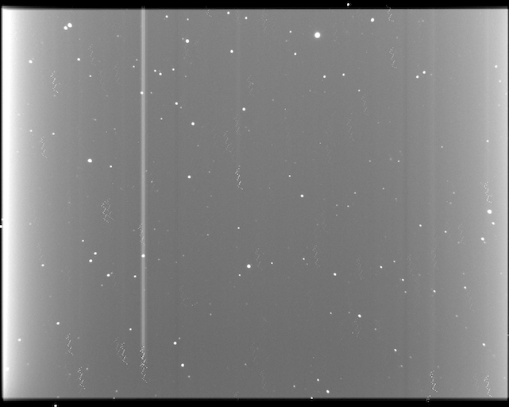

Thoughts, ideas, and projects from a
backend developer.
About Me
Hi, I'm Severin Denisenko, a backend
developer expertise in C++, C, Haskell, and Python.
Projects
This website: Backend in pure
Haskell using unix sockets. GitHub
Astroimsum: Tool for
astronomical imagery summation. GitHub

Celestial Mechanic Solvers: Framework
for solving ODEs and other numerical tasks
developed for astronomical applications. GitHub
Work experience
Software engineer in YADRO:
Hight-performace data storage systems. From writing
Linux kernel and Linux kernel modules to userspace
services, developer tools and writing patches for
open-source projects. Also working with prodaction
systems as L3 escalation support.